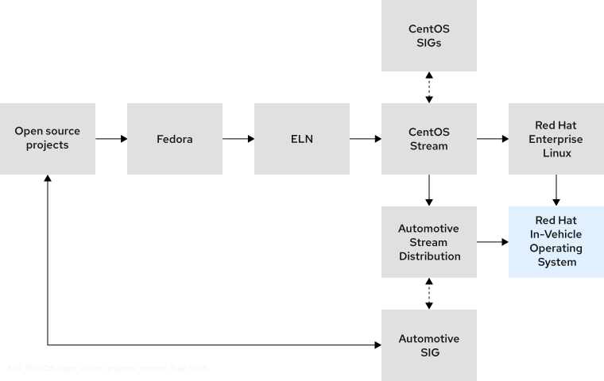
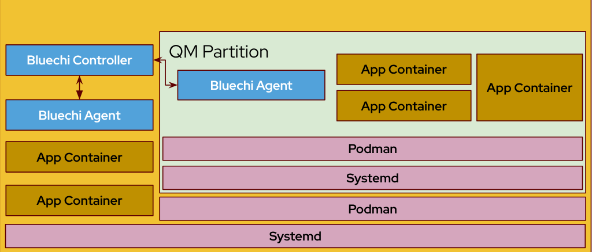
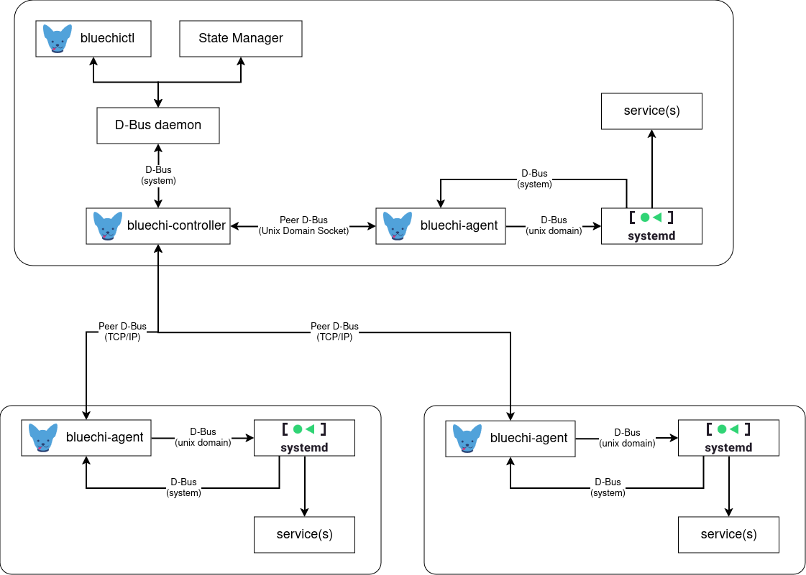

AutoSD#
Abstract#
AutoSD is the upstream binary idistribution that serves as the public, in-development preview and functional precursor of the Red Hat In-Vehicle Operating System (OS).
AutoSD is downstream of CentOS Stream, so it retains most of the CentOS Stream code with a few divergences, such as an optimized automotive-specific kernel rather than CentOS Stream’s kernel package. Red Hat In-Vehicle OS is based on both AutoSD and RHEL, both of which are downstreams of CentOS Stream.
{kind=link}
Motivation#
AutoSD allows the S-CORE stack to be built and tested in a very similar architecture that would be used by the Red Hat In-Vehicle Operating System (OS).
This section is split into sub-sections to highlight AutoSD’s main features.
Declarative Workloads#
AutoSD uses Quadlet, a tool that extends Systemd unit files to define linux container workloads managed by podman and orchestrated by Systemd.
System level files can be deployed at /etc/containers/systemd.
Quadlet parse those files when the OS is booting or when a “systemd daemon-reload” is triggered, generated files are located at “/run/systemd/generator/”.
An sample .container file usually looks like this:
[Unit]
Description=The sleep container
After=local-fs.target
[System]
Restart=always
[Container]
Image=registry.access.redhat.com/ubi9-minimal:latest
Exec=sleep 1000
[Install]
# Start by default on boot
WantedBy=multi-user.target default.target
Quadlet also supports the usage of Kubernetes YAML files, allowing the same workload definition to be used by a kubernetes cluster and Podman:
[Unit]
Description=The sleep container
After=local-fs.target
[System]
Restart=always
[kube]
yaml=sleep.yml
[Install]
# Start by default on boot
WantedBy=multi-user.target default.target
apiVersion: v1
kind: Pod
metadata:
name: sleep-pod
spec:
containers:
- name: sleep-container
image: registry.access.redhat.com/ubi9-minimal:latest
command: ["sleep", "1000"]
Mixed Critical Orchestration#
AutoSD ships a mixed critical orchestration stack with Systemd, Podman, Eclipse BlueChi and QM (containerized environment for QM workloads), which is tightly coupled to the operating system.
Its QM environment is mounted from its own partition and run as a linux container using podman from its own sysroot path:
{kind=link}
Eclipse BlueChi enables mixed critical orchestration between QM and non QM workloads with Systemd:
{kind=link}
Eclipse BlueChi can also work with other orchestrators, be it on-bord or off-board, by implementing “state managers”, which can interact with Eclipse BlueChi through its DBUS API to manage workload lifecycles.
More details about Eclipse BlueChi and QM can be found at:
Supported Architectures and Platforms#
AutoSD images are constantly built and tested against both x86_64 and aarch64 architectures through the Automotive SIG pipelines. It’s also built/tested against the following platforms:
Texas Instruments:
BeaglePlay (beagleplay)
SK-AM62x Sitara (am62sk)
SK-AM69 Jacinto (am69sk)
TDA4 EVM (tda4vm_sk)
J784S4 EVM (j784s4evm)
Renesas R-Car S4
NXP S32G-RDB3
Qualcomm Snapdragon Ride SX 4.0
Raspberry pi 4
The following “virtual platforms” are also supported:
QEMU
AWS
Azure
Further details at https://sigs.centos.org/automotive/provisioning/.
Testing Tools#
AutoSD contains a collection of tools for Perf & Scale tests that can be used to test its S-CORE image: https://sigs.centos.org/automotive/performance_monitoring_with_pcp/#arcaflow-workflow.
Rationale#
The proposal is to maintain a repository with manifest AutoSD files to build an image tailored for the S-CORE project, the repository is currently maintained within the CentOS Automotive SIG organization in Gitlab: CentOS/automotive/autosd-image-score, but it could be moved to the S-CORE Github organization as well.
To run Eclipse S-CORE modules and related components in AutoSD, these need to be packaged, in either linux containers images or RPMs.
Packaging would happen at the module level, meaning that:
A container image for a given module would contain all its components;
A RPM for a given module would ship all its components as sub-packages.
The CentOS Automotive SIG can build and host either format.
There is also the option to test the S-CORE task in some of AutoSD’s supported hardware, if there is interest (needs further discussion on what and how to test).
Specification#
Possible impacted areas of the specification:
Operating System and related components
Mixed Critical Orchestration
IPC
Backwards Compatibility#
Note
Not needed since it’s a new development platform to be included.
Security Impact#
Note
The platform can help on some security tests, since it uses several SELinux policies (these can be provided if needed).
Safety Impact#
Note
No impact since it’s a development platform.
License Impact#
Note
No impact, image manifest files can be licensed under Apache 2.0.